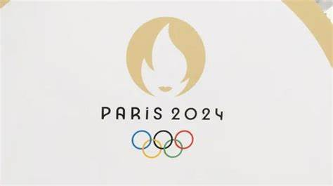
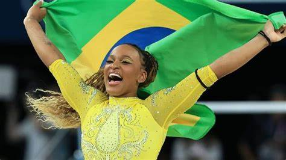
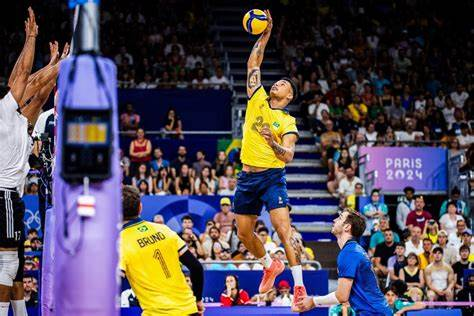

- 
- 
- 
País está em 15° no ranking geral. Até o momento, o Brasil subiu onze vezes ao pódio nos Jogos Olímpicos de Paris-2024. Conquistou duas medalha de ouro, quatro pratas e cinco bronzes e está em 15° no ranking geral. Hoje, 5, Rebeca Andrade superou Simone Biles e levou o primeiro ouro em Paris-2024 na final do solo.
Hoje, 5, Rebeca Andrade superou Simone Biles e levou o primeiro ouro em Paris-2024 na final do solo.
Darlan é a nova estrela da Seleção Brasileira masculina de vôlei na disputa das Olimpíadas 2024. O oposto de 22 anos e 1,92m de altura se tornou destaque do Brasil no Pré-Olímpico para os Jogos. Ele foi o maior pontuador da equipe no torneio e sétimo no geral, sendo fundamental para a classificação da equipe à Paris.